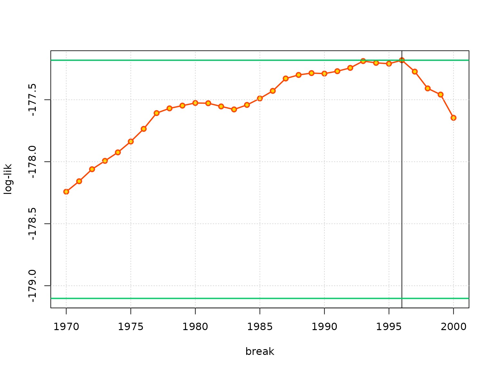

design
argument of TVGEV
vignettes/TVGEV_varInDesign.Rmd
TVGEV_varInDesign.Rmddesign argument
The design argument of the TVGEV function
is intended to be “language”. It can embed a “parameter” given as a R
object in the environment, yet this can cause problems due to the
scoping rules, especially when the TVGEV function is used
from within a function.
As an example, we will consider the case where a time trend is specified as a broken line with a slope zero before the time of change, say , and with an unknown slope after the time . This is similar to a kink regression in the linear regression framework.
It is not possible with NSGEV to consider
as a model parameter because TVGEV models are assumed to
link each of the three GEV parameters to a linear predictor having the
form
. Incidentally, would
be considered as a model parameter, the log-likelihood would no longer
be differentiable w.r.t.
,
and adjustments would be required in the likelihood-based inference.
However we can think of using a grid of candidate values for the change
of slope time
:
by fitting the model with
fixed to each grid value say
for
,
,
… we can compute the corresponding maximised log-likelihoods and then
choose the value of
as the grid value with maximal log-likelihood. It is convenient to write
a function inside which the loop on the candidate values is found. The
broken line can be obtained with the breaksX design
function: its breaks argument corresponds to the vector of
knots for the truncated power splines. By using a single knot, one gets
two basis functions - see the help for breaksX. One only
needs to use the broken line basis function with name
"t_1990" if for example the change of slope
is located at year 1990. A possible problem arises from the fact that
the candidate value
has to be passed to the design function.
For illustration, consider the Dijon_TXmax example:
assume that the plausible breaks are in the range 1970 to
2000. To make things slightly more general we assume that
col contains the name of the column for the maxima in the
data frame maxData.
fitBreaks <- function(maxData, col) {
if (!inherits(maxData$year, "Date")) {
maxData$year <- as.Date(paste0(maxData$year, "-01-01"))
}
res <- desCall <- list()
yearBreaks <- c(1970:2000)
for (ib in seq_along(yearBreaks)) {
if (TRUE) { ## WORKS
desCall[[ib]] <-
sprintf("breaksX(date = year, breaks = \"%4d-01-01\", degree = 1)",
yearBreaks[ib])
floc <- sprintf("~ t1_%4d", yearBreaks[ib])
text <-
sprintf(paste0("TVGEV(data = maxData, response = col, date = \"year\",\n",
" design = %s,\n",
" loc = %s)\n"),
desCall[[ib]], floc)
res[[ib]] <- eval(parse(text = text))
} else { ## DOES NOT WORK
d <- sprintf("%4d-01-01", yearBreaks[ib])
floc <- sprintf("~ t1_%4d", yearBreaks[ib])
res[[ib]] <- TVGEV(data = maxData, response = col, date = "year",
design = breaksX(date = year, breaks = d, degree = 1),
loc = floc)
}
}
ll <- sapply(res, logLik)
iMax <- which.max(ll)
## Compute lims to include the 'confidence' logLik level
llLim <- ll[iMax] - qchisq(0.95, df = 1) / 2
yearMax <- yearBreaks[iMax]
plot(yearBreaks, ll, type = "o", pch = 21, col = "orangered",
ylim = range(ll, llLim) ,
lwd = 2, bg = "gold", xlab = "break", ylab = "log-lik")
grid()
iMax <- which.max(ll)
abline(v = yearMax)
abline(h = ll[iMax] - c(0, qchisq(0.95, df = 1) /2),
col = "SpringGreen3", lwd = 2)
fit <- res[[iMax]]
return(fit)
}
names(TXMax_Dijon) <- c("year", "TXMax")
(fitL <- fitBreaks(maxData = TXMax_Dijon, col = "TXMax"))
## Call:
## TVGEV(data = maxData, date = "year", response = col, design = breaksX(date = year,
## breaks = "1996-01-01", degree = 1), loc = ~t1_1996)
##
## Coefficients:
## Estimate Std. Error
## mu_0 32.6483420 0.23098848
## mu_t1_1996 0.1328950 0.03771828
## sigma_0 1.7427827 0.14585534
## xi_0 -0.1704297 0.07243566
##
## Negative log-likelihood:
## 177.181The object given in the design formal argument is
normally a call to a function, which is internally used with
do.call. If a R object such as d is used in
the call, it is first looked for in the environment of the call (here,
the data frame), then in the environment of the function (here,
fitbreaks). In both cases the object d does
not exist.
We could turn d into a (constant) column of the data
fame: this would make the estimation successful. Yet the fitted object
would require for a prediction with predict that the column
d is found in the provided new data, which is
tedious. The solution chosen here is to parse a code with the variables
replaced by their value. We see that the returned TVGEV
object contains the wanted formula and the wanted design. It does no
longer relate to an extra R variable.
From a statistical perspective, it must be kept in mind that the ML estimate of the break does not have the standard normal distribution, because the log-likelihood function is not differentiable. On intuitive grounds, the estimate should be “super-efficient”. Using the classical chi-square approximation to derive a profile likelihood interval should consequently lead to an interval with a coverage rate that is larger than the nominal one. On the plot the horizontal green lines show the maximised log-likelihood and the value that would be used to find the limits of a profile likelihood confidence interval under the classical regularity conditions, which are not met here.